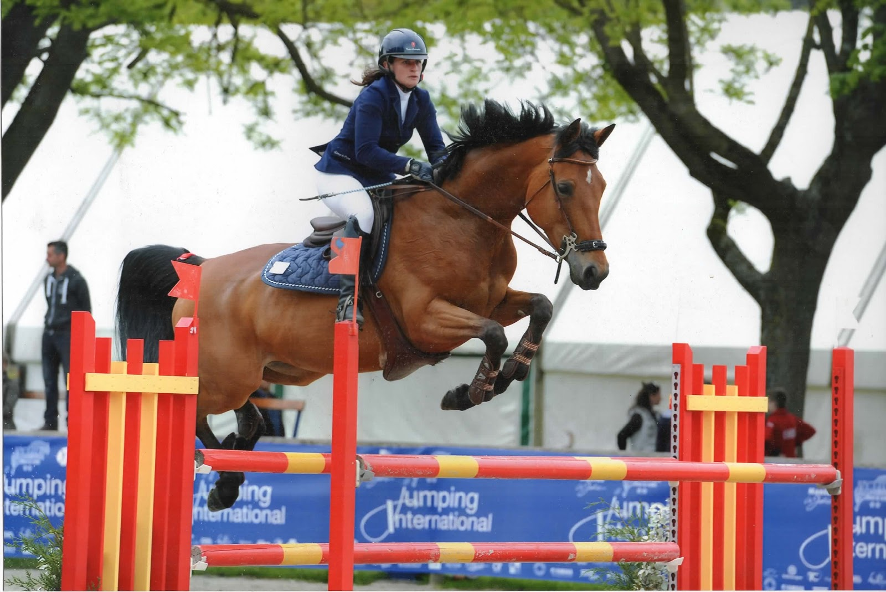

Pauline Bourdon \ Dossier de Sponsoring
Pauline Mauceri-Bourdon
Phasellus non pulvinar erat. Fusce tincidunt nisl eget ipsum.
Pauline Mauceri - Bourdon
Gérante de l’Elevage de P’aime & Cavalière Professionnelle
- Née le, 2 février 1982, à Paris 14ème.
- Mariée, 1 enfant.
- Diplômes: Bac Litteraire option Arts Plastiques
- Prépa aux grandes écoles d’arts
- Licence en Ostéopathie Equine
- Galop 7
Mon Parcours Equestre
J’ai commencé l’équitation à poney à l’âge de 4 ans. Je passe mes “Galops” , (examens pour évaluer son niveau et pouvoir faire de la compétition), je suis très vite attirée par le sauts d’obstacles. Je participe à mon 1er concours à l’age de 8 ans et depuis la compétition fait partie de ma vie, En 1995, je suis vice championne d’Ile de France dans ma catégorie ce qui me fait acceder à mes 1ers Championnats de France à 13 ans avec la ponette de ma meilleure amie car à l’époque mes parents n’ont pas les moyens de m’acheter et entretenir un poney. J’y participe 2 fois par la suite, dont la dernière année avec cette fois-ci ma ponette.
 A 18 ans je quitte les poneys et passe à cheval, et commence à sortir en épreuve Amateur. Mes premiers chevaux de concours (certains à la retraite dans mes prés) que mes parents m’achètent sont des chevaux avec de l’expèrience afin de me faire évoluer et combler mes lacunes. J’ai donc beaucoup de classements dans les petites épreuves et au fur à mesure je monte dans les niveaux d’épreuves. A cette époque je ne me destine pas du tout à une carrière de cavalière professionnelle et gérante d’une écurie, je continue en parralèle mes études en Arts mais les chevaux me rattrapent car j’entreprends des études en ostéopathie équine! Je participe également à mes premiers concours internationaux dans lesquels je suis classée parmi des cavaliers professionnels.
C’est en 2007 que finalement nous construisons nos écuries avec mes parents qui ont acheté une propriété en Normandie, pour accueillir nos chevaux afin de réduire les frais de pension et avoir le plaisir des les avoir avec nous. Pour des raisons de santé on me déconseille de pratiquer l’ostéopathie, je me fais une raison et c’est pour cela que je décide de me consacrer à notre petit élevage et au travail de mes chevaux et petit à petit au travail des chevaux que l’on me met en pension.

Il est très difficile de faire naître un “Crack” pour un éleveur,c’est ce qu’on espère tous... avoir le meilleur cheval!! Nous avons eu cette chance avec notre première pouliche: Quirha de P’aime. Nous avons pu la garder jusqu’à ses 7 ans, Classée en concours tous les week-end sur de très belles et grosses épreuves. Elle se fait d’ailleurs remarquer par un des meilleurs cavaliers français (Michel Robert, un des piliers de l’équipe de France) qui croit en elle et en fait l’acquisition. Pour nous c’est une histoire incroyable!